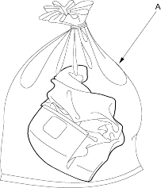
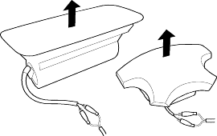

- Connect a 12 volt battery to the tool.
- If the green light on the tool comes on, the igniter circuit is defective and cannot deploy the component. Go to Damaged Airbag Special Procedure.
- If the red light on the tool comes on, the component is ready to be deployed.
- Push the tool's deployment switch. The airbags and tensioners should deploy (deployment is both highly audible and visible: a loud noise and rapid inflation of the bag, followed by slow deflation).
- If the components deploy and the green light on the tool comes on, continue with this procedure.
- If an component does not deploy, yet the green light comes ON, its igniter is defective. Go to Damaged components Special Procedure.
- During deployment the airbag can become hot enough to burn you. Wait 30 minutes after deployment before touching the airbag.
- Dispose of the complete airbag. No part of it can be reused. Place it in a sturdy plastic bag (A) and seal it securely.

If an intact airbag or tensioner has been removed from a scrapped vehicle, or has been found defective or damaged during transit, storage or service, it should be deployed as follows:

- Confirm that the special tool is functioning properly by following the check procedure on this page or on the tool label.
- Position the airbag face up, outdoors on flat ground at least 30 feet (10 meters) from any obstacles or people.
- Follow steps 9, 10, 11, and 12 of the in-vehicle deployment procedure.
Disposal of Damaged Components
- If installed in a vehicle, follow the removal procedure for the driver's airbag (see page 23-165), front passenger's airbag (see page 23-167), side airbag (see page 23-169), seat belt tensioner for 4-door model (see page 23-5) and 5-door model (see page 23-15).
- In all cases, make a short circuit by twisting together the two inflator wires.
- Package the component in exactly the same packaging that the new replacement part come in.
- Mark the outside of the box ''DAMAGED AIRBAG NOT DEPLOYED'', ''DAMAGED SIDE AIRBAG NOT DEPLOYED'', or ''DAMAGED SEAT BELT TENSIONER NOT DEPLOYED'' so it does not get confused with your parts stock.
- Contact your Honda District Service Manager for how and where to return it for disposal.
Deployment Tool Check
- Connect the yellow clips to both switch protector handles on the tool; connect the tool to a battery.
- Push the operation switch: green means the tool is OK; red means the tool is faulty.
- Disconnect the battery and the yellow clips.